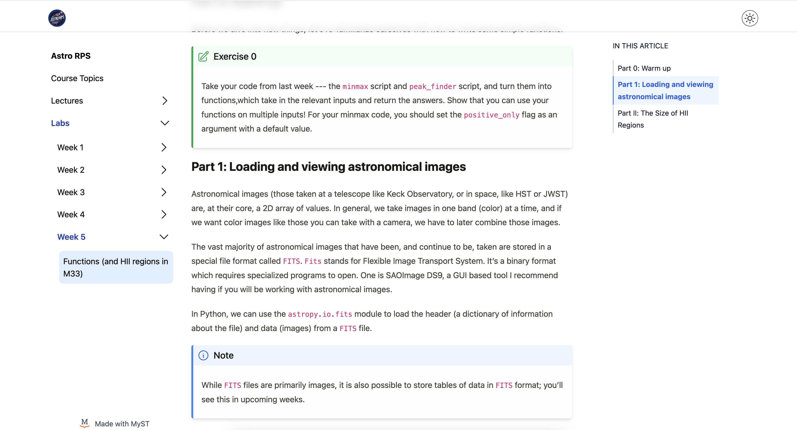

> hack + day + conference
kline tower // yale university // 2024 May 31
The goal of this conference and hack day is to bring together eductators (e.g., faculty, lecturers, postdocs, grad students) who often find themselves in the position of teaching research skills (namely, coding skills).
Together, we aim to create a high quality set of exercises which leverage astronomical data and techniques, while teaching critical coding skills students will need in research projects.
We envision such a repository being useful for anyone attempting to develop new curricula, with exercises designed to be slotted into relevant research methods courses or sprinkled in topical classes.
We'll also have discussions surrounding this form of pedagogy, with a keynote talk from Daniel Anglés-Alcázar.
Registration is free, and we have funding available to help cover the cost of travel (e.g., train tickets). The registration deadline is May 10, 2024.
Questions? Email imad.pasha@yale.edu.
The AstroCodEx HDC gratefully acknowledges funding support from:

> how it works
This "Hack Day Conference" (HDC) will be a blend of several event types you may be familiar with:
- A hack day, in which attendees actively work on material and content (in this case, educational exercises)
- An un-conference, in which attendees discuss broad and specific challenges and successes in a given subfield (here, that of research-methods pedagogy)
- A collaboration meeting, in which a more tight-knit group discusses the vision and logistical organization of a collaboration
- A journal submission, in which content is peer-reviewed and modified with feedback before acceptence into a corpus
The end result we hope for is two-fold:
- An initial repository of peer-reviewed, high quality exercises covering a range of coding and astrophysical topics
- An initial collaboration of individuals, willing to help moderate and build upon that respository
We ask attendees to bring a favorite dataset or idea for a set of exercises. Everyone will get immediate feedback and ideas along the way. Like many hack-day style events, attendees are also welcome to jump on a different idea than the one they brought.
We aim to utilize peer review / active feedback --- something most of us don't get when designing pedagogical materials --- along with some key technological assets, such as automatic tests for exercises to keep them up to date as codebases change, to make a resource educators will find it beneficial to both pull from and contribute to.
We especially hope to make such a resource living; that is, as exercises are used in the classroom, updates, corrections, and improvements can be implemented via a pull-request style framework.
Example of Myst-tools in action, allowing for web-pages to be built from jupyter notebooks with formatting for sections, code, and specialized exercises and notes. This image taken from the website used to share materials for an introductory astronomy coding class at Yale.
> organizing committee
Imad Pasha
NSF Graduate Research Fellow
Yale University
Malena Rice
Assistant Professor
Yale University
> advisory committee
Priya Natarajan
Professor
Yale University

Meg Urry
Professor
Yale University
> schedule
This HDC will take place at Yale University on May 31, 2024. We will be hosted in Kline Tower (219 Prospect Street, New Haven CT 06511).
A preliminary schedule for the day:
- 08:30a - Introduction and Coffee
- 09:00a - Keynote Address: Daniel Anglés-Alcázar (University of Connecticut)
- 09:40a - Overview of Jupyter + Myst-tools
- 10:00a - Hack Session I (grouped by topic)
- 12:00p - Lunch Break
- 13:00p - Group discussion on Hack Session I
- 13:30p - Peer Review Period (trade exercises, attempt and give comments)
- 14:30p - Hack Session II: (building on feedback and comments)
- 15:30p - Group discussion on Hack Session II
- 16:00p - Group discussion: Ideas for the maintainence, distribution, and use of the Astrocodex
- 17:00p - Finish time
> biography: keynote speaker Daniel Anglés-Alcázar
We are thrilled to have Daniel Anglés-Alcázar as a keynote speaker during the HDC.
Daniel is an astrophysicist at the University of Connecticut. He obtained his PhD from the University of Arizona, and carried out a postdoc at Northwestern/Ciera, followed by a stint as a Flatiron Research Fellow at the Flatiron Center for Computational Astrophysics before he became an assistant professor at UConn.
In 2023, Daniel was awarded a Cottrell Scholarship, which honors and helps to develop outstanding teacher-scholars who are recognized by their scientific communities for the quality and innovation of their research programs and their potential for academic leadership.
Daniel's Cottrell Program fits strongly within the Astrocodex mission, with a goal of creating "a multi-component educational program aimed at increasing the retention and success of students from underrepresented groups in the Physical Sciences, including a redesign of graduate and undergraduate courses in Computational Physics to incorporate more effective active learning approaches that can help reduce achievement gaps and offer disproportionate benefits for minority students, and an undergraduate program that will provide mentoring and financial support for students from underrepresented groups in STEM to participate in semester-long data visualization projects using Python programming tools."